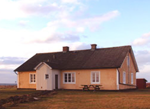
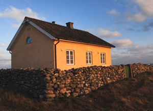
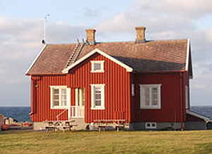
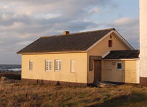
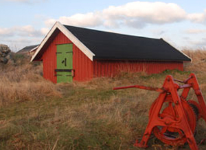
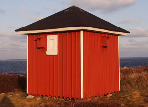
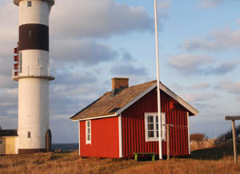
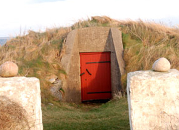
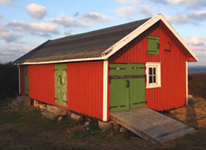
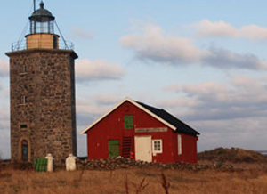

Nidingens byggnader berättar om livet på ön under fyra sekler – från fyrvaktarnas vardag till sjöfartens historia.
På Nidingen finns ett unikt samlat bestånd av byggnader som spänner från 1832 till tidigt 1900-tal. Husen användes av fyrmästare, fyrvaktare och deras familjer som levde och arbetade på ön i generationer. Föreningen Nidingens Vänner arbetar tillsammans med Statens Fastighetsverk för att bevara dessa byggnader enligt antikvarisk standard.
Flera av byggnaderna är statliga byggnadsminnen och vittnar om den tid då ett helt litet samhälle var verksamt ute i havet – med bostäder, förråd, båthus och djurhållning.

Uppfört 1832, ett av öns äldsta bevarade bostadshus. Tjänade som bostad för fyrvaktare och deras familjer under 1800-talets mitt.

Byggt 1852 som bostad för fyrmästaren – den ansvarige för drift och underhåll av fyrarna. Ett välbevarat exempel på periodens byggnadskonst.

Det yngre fyrmästarhuset från 1930 speglar en modernare period i fyrplatsens historia, då automatisering successivt förändrade arbetet på ön.

Uppfört 1833 för att inhysa maskineri för mistsignalering. Dimma var ett av de farligaste hindren för segelfartyg, och mistsignalen var ett livsviktigt komplement till fyrarnas ljus.

Båthuset användes för förvaring av roddbåtar och annan sjöutrustning. Transporter till och från fastlandet var helt beroende av egna båtar.

Kruthuset förvarade krut till de kanoner som användes för mistsignalering. Byggnadens isolerade placering var ett medvetet säkerhetsbeslut.

En gemensam tvättstuga för öns invånare. Byggnaden påminner om att Nidingen under lång tid var ett litet självförsörjande samhälle mitt i havet.

Användes för förvaring av matvaror. På en isolerad ö utan regelbundna leveranser var en välförsedd källare avgörande för att klara långa perioder av dåligt väder.

Hönshållning bidrog till öns självförsörjning. Äggen var en viktig del av kosten för de familjer som bodde permanent på Nidingen.
Fågelstationens hus används idag av Göteborgs Ornitologiska Förening (GOF) som bas för den systematiska ringmärkning av fåglar som bedrivits sedan 1980. Mer än 250 000 fåglar har ringmärkts sedan starten.
Byggnaden är ett levande bevis på att Nidingens historia inte enbart handlar om det förflutna – ön är fortfarande ett aktivt centrum för vetenskaplig forskning och naturobservation.

Föreningens frivilliga arbetar löpande med att restaurera och underhålla dessa unika byggnader tillsammans med Statens Fastighetsverk.